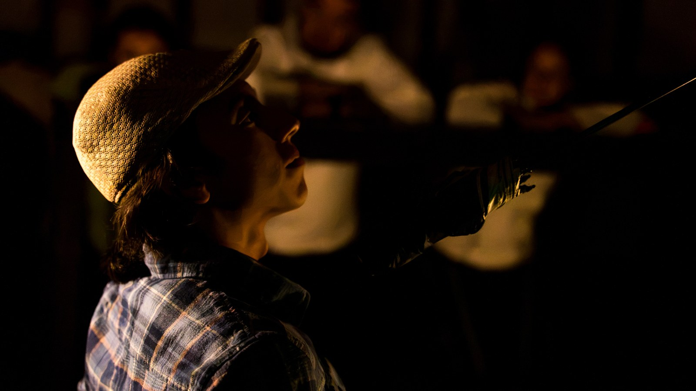
LA
COCINA
¿Desea incluir el servicio?
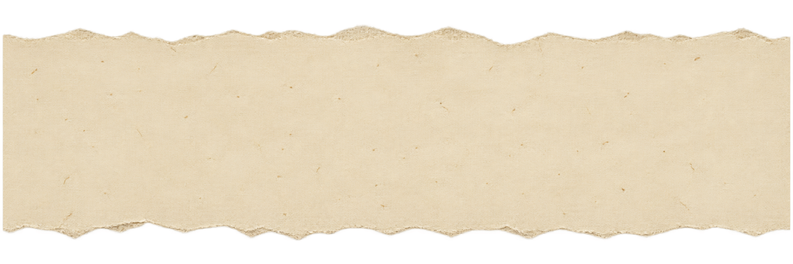
¡ESTAMOS HACIENDO
UNA VACA!
Pequeños aportes,
grandes obras.
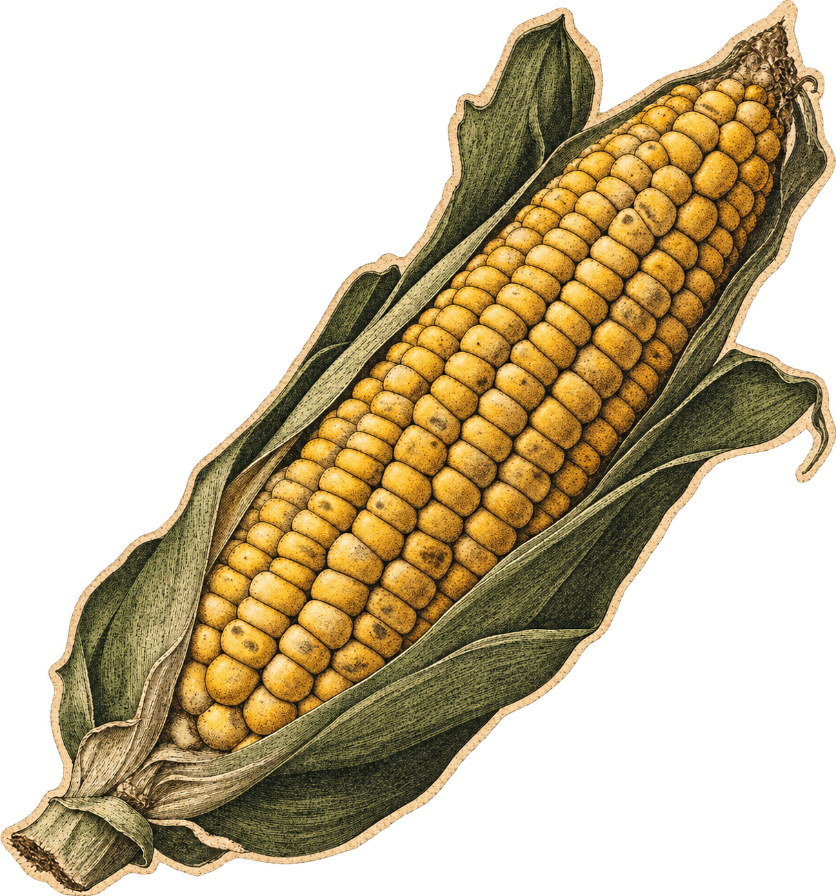

01 / Detrás del servicio
Una obra
que se está
haciendo.
Un restaurante. Muchas formas de servir.
La Cocina es una creación colectiva que explora lo que ocurre detrás de un restaurante: quienes cocinan, atienden, cobran, limpian y esperan. Nos preguntamos por el trabajo, las relaciones y por lo que significa servir a otros.
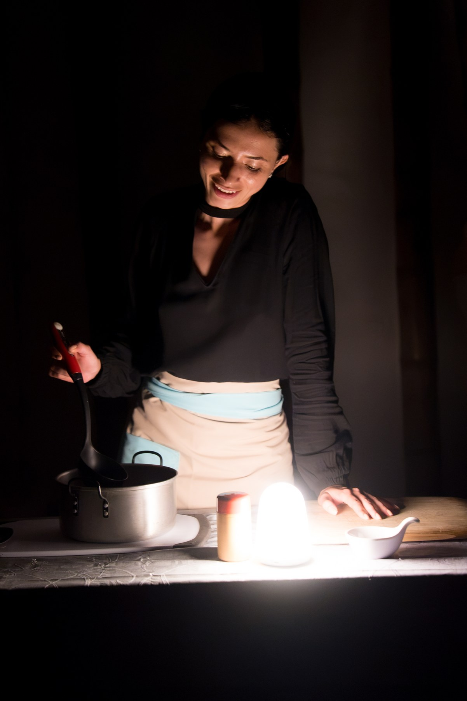
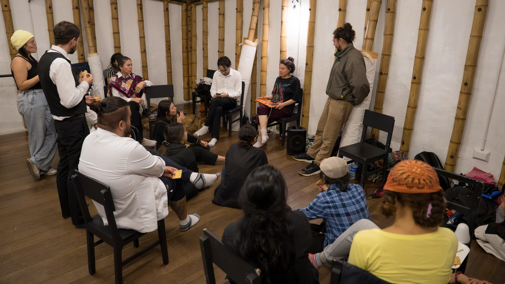
SOMOS
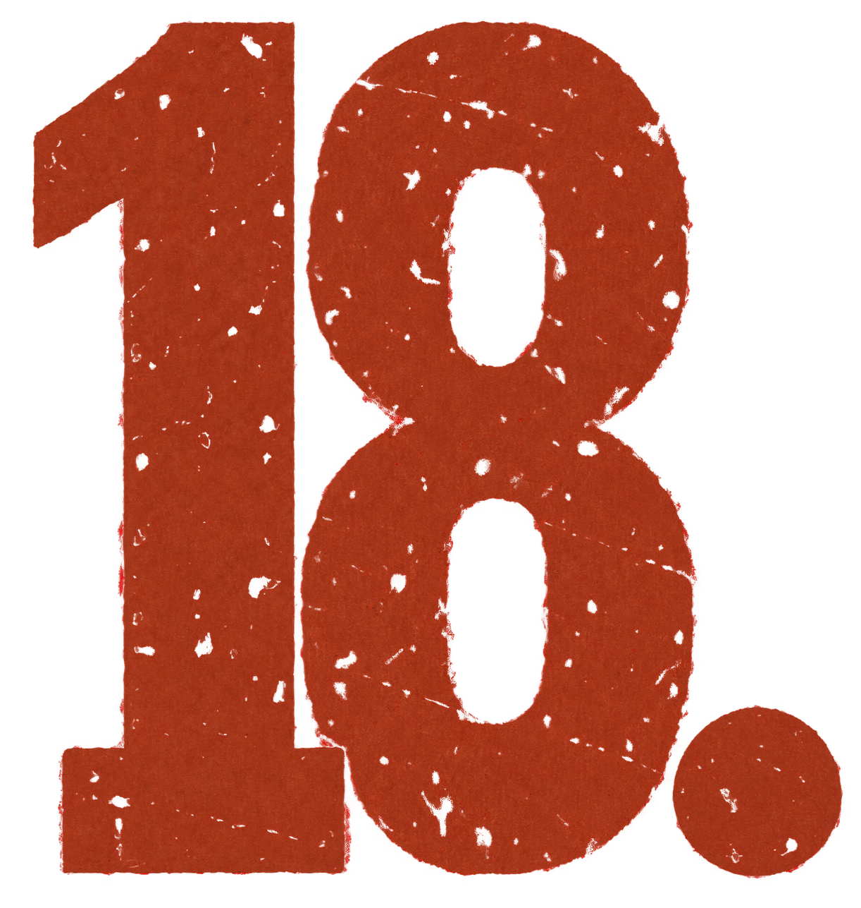
02 / El encuentro
De un laboratorio
nace una comunidad
que crece.
Conoce a quienes la hacen posible.
Abrimos un laboratorio de entrenamiento y creación alrededor de la cocina. Desde ese encuentro nació un grupo que decidió seguir trabajando: personas con experiencias en cocina, atención al público, diseño de videojuegos, comunicación, filosofía, docencia y artes.
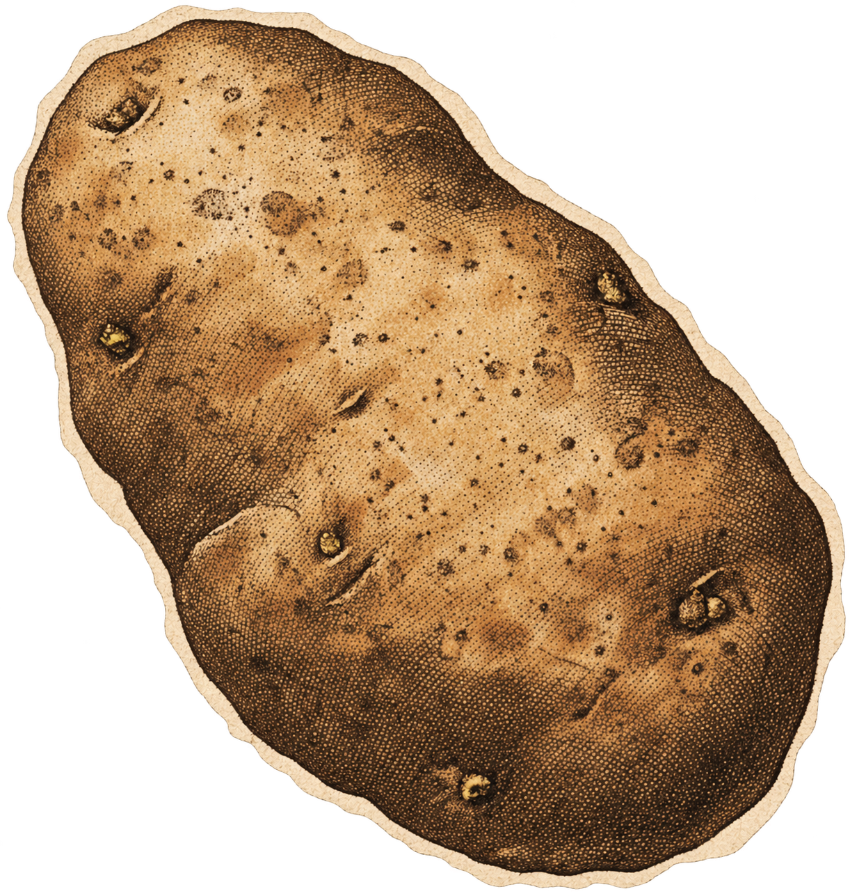
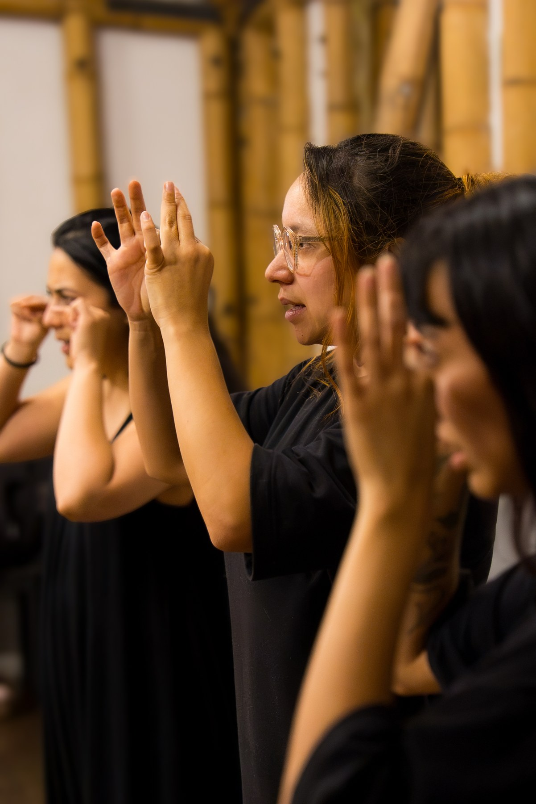
03 / La formación
Nos formamos
haciendo
la obra.
Creemos que todas las personas pueden estar en escena.
Creación y aprendizaje ocurren al mismo tiempo. El cuerpo, la voz, la escucha y el trabajo colectivo se entrenan mientras construimos la puesta en escena. Cada persona aporta su experiencia y se forma en el encuentro con las demás.
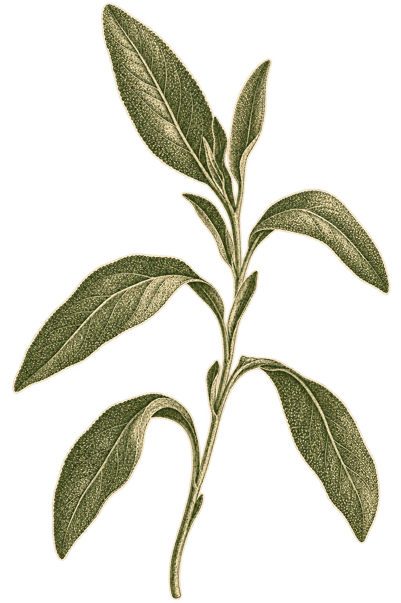
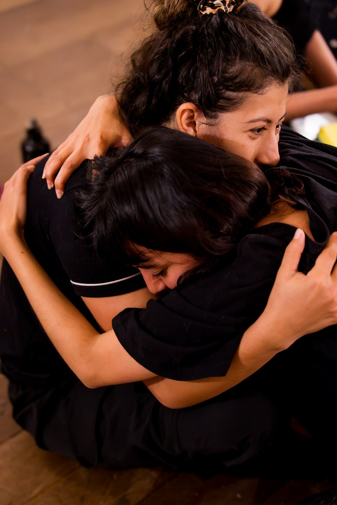
Cuidar también es crear
UN TRABAJO JUSTO TAMBIÉN HACE PARTE DE LA OBRA.
Por qué necesitamos una mano.
Durante esta etapa estamos donando nuestro tiempo y nuestro trabajo para que La Cocina siga creciendo. Tu aporte nos ayuda a sostener este proceso y a construir condiciones de remuneración digna para quienes lo hacen posible.
El proceso en imágenes
Fragmentos de un camino colectivo
04 / Lo que viene
Ya empezamos.
Queremos
hacerla crecer.
Del laboratorio a una obra de gran formato.
El laboratorio se desarrolló en el Teatro Libre y tuvo un primer encuentro con el público. Queremos llevar este trabajo hacia una obra de gran formato: música en vivo, vestuario y escenografía creados para la obra, diseño de iluminación y trabajo coreográfico.
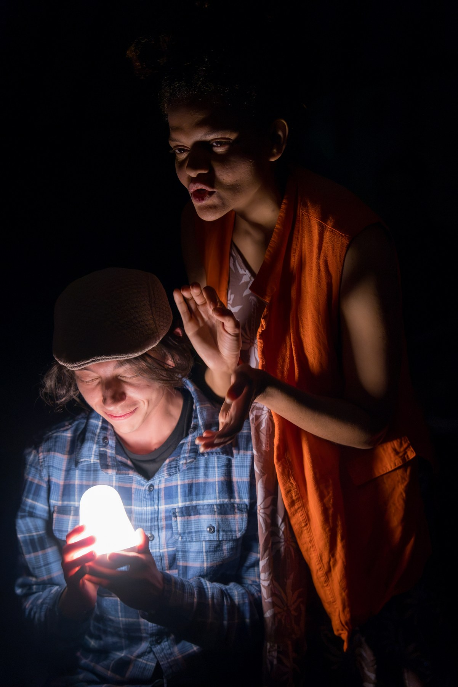
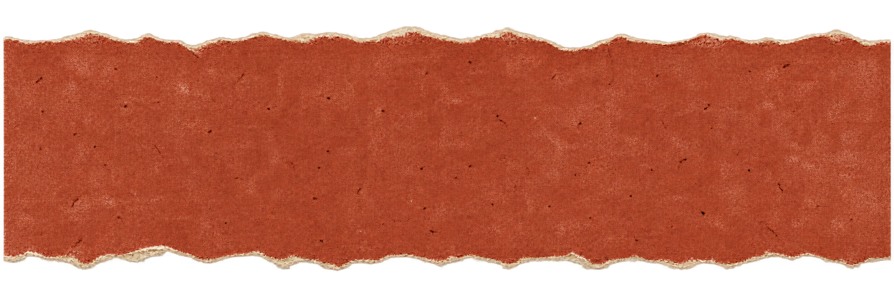
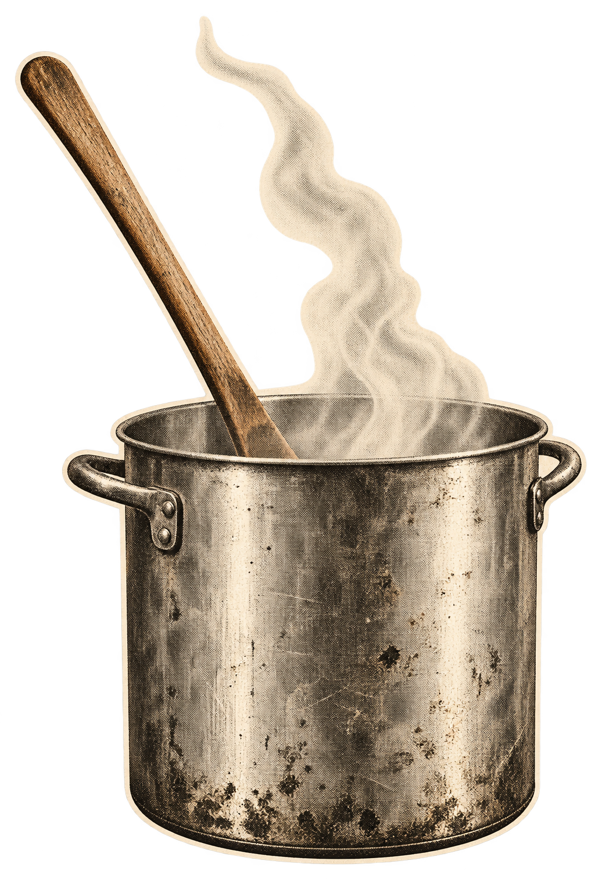
¿PARA QUÉ
ES LA VACA?
Cada aporte hace parte.
Creación
Ensayos y desarrollo de la obra.
Escenografía
Construcción y materiales para la puesta en escena.
Vestuario
Diseño y realización del vestuario.
Música
Composición musical y banda en vivo.
Equipo artístico y técnico
Iluminación, coreografía y producción.
Trabajo
Remuneración digna de quienes hacen posible la obra.
Unas cocinas se sostienen porque muchas manos hacen algo al mismo tiempo.
Esta obra también.